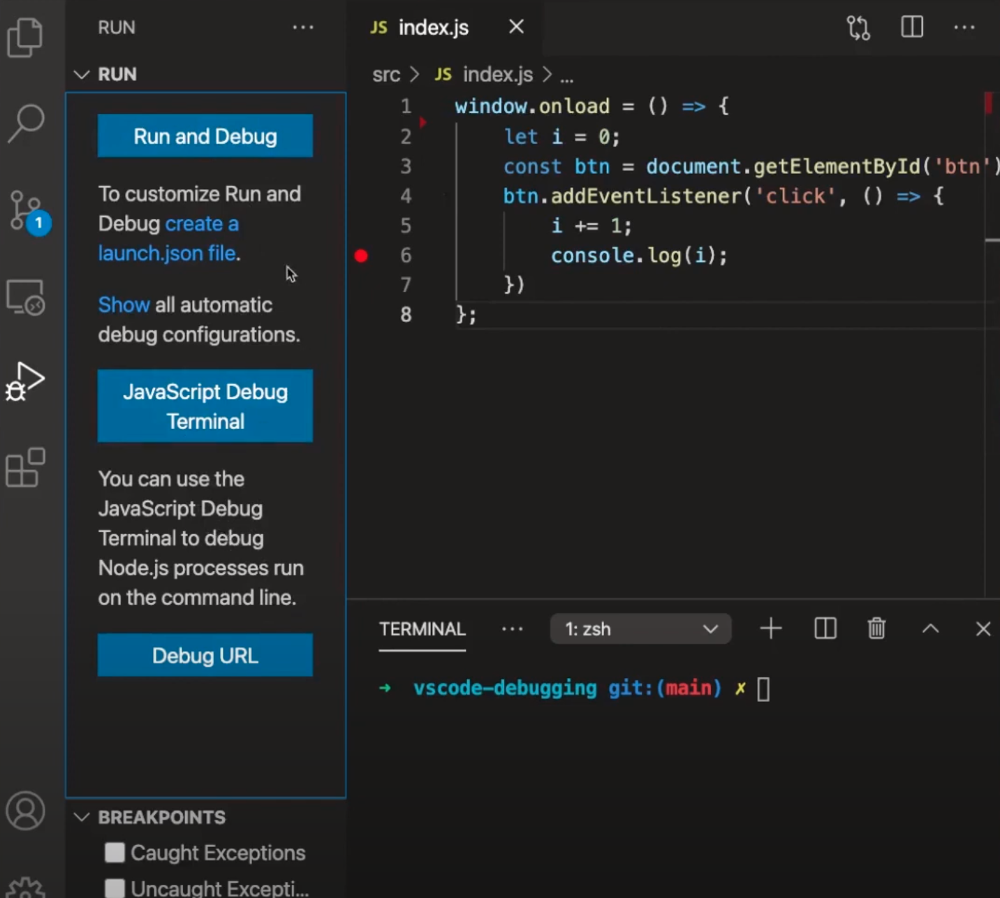
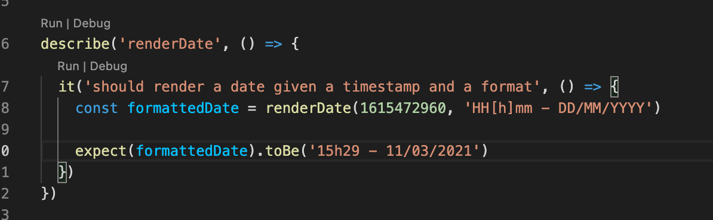

🎵 Y a quelqu'un qui m'a dit, que tu ... console.log encore 🎵
Node / React
VS Code
2 moyens possibles
Créer un fichier launch.json
Créer un Terminal en mode debug
Depuis VSCode
Fichier Launch.json
On peut le générer via Vs code
Configurez pour le back-end ou le front-end
Renseignez le port utilisé que l’on veut debugger
Pour pouvoir définir des points d'arrêt dans les fichiers recherchez debug.allowBreakpointsEverywhere, puis activez-le.
{
"debug.allowBreakpointsEverywhere": true
}
Exemple Launch.json (avec Chrome)
{
"version": "0.2.0",
"configurations": [
{
"type": "chrome",
"request": "launch",
"name": "Launch Chrome back localhost",
"url": "http://localhost:8083/rest/hello-world/",
"webRoot": "${workspaceFolder}/api/src/**"
},
{
"type": "chrome",
"request": "launch",
"name": "Launch Chrome front localhost",
"url": "http://localhost:3000",
"webRoot": "${workspaceFolder}/client/src/**"
}
]
}
Features
- Evaluer le code
- Breakpoint conditionnel (ne s’arrête que si la condition est satisfaite)
- LogPoint (comme un console.log, mais sans modifier le code)
- Watcher : surveiller des variables ou expressions
Terminal en mode debug
Tout ce qui sera lancé (node, npm) aura un debugger rattaché
Possibilité de le lancer depuis la racine du projet qui contient des sous projets) avec la commande: npm run dev et ajoutez les breakpoints
Mode Auto Attach
à activer en Smart, désactivable dans la barre d’outils en bas. Tout ce qui sera lancé dans n’importe quel terminal (node, npm) aura un debugger rattaché.

JetBrains
Tests unitaires avec Jest
Prérequis :
Jest
Jest Runner (VSCode extension)

Le plugin permet de lancer et debugger indépendamment chaque test.
